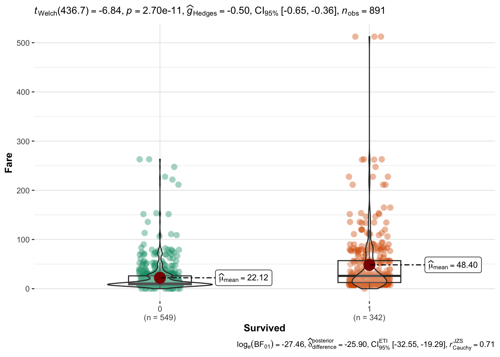
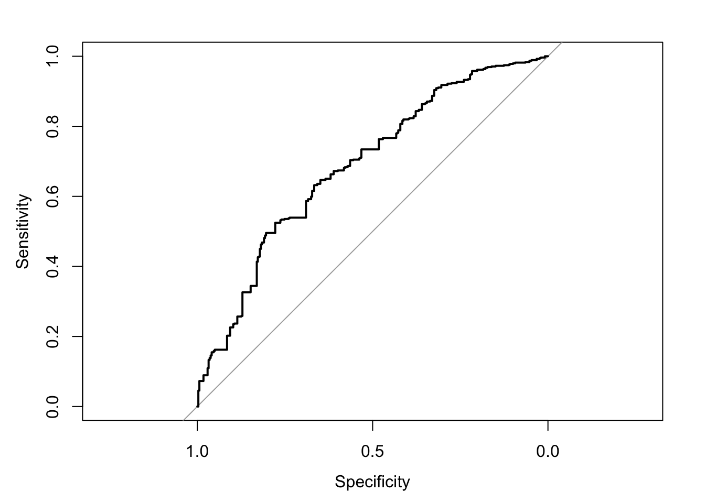
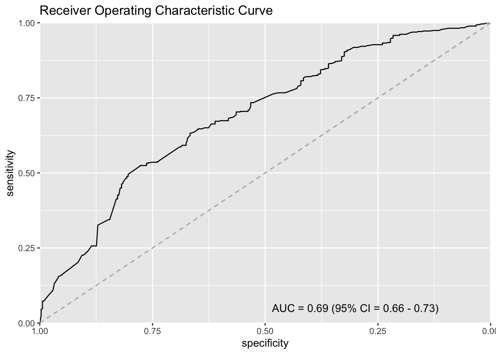

names(titanic_train) [1] "PassengerId" "Survived" "Pclass" "Name" "Sex"
[6] "Age" "SibSp" "Parch" "Ticket" "Fare"
[11] "Cabin" "Embarked" Adaped from: Link
names(titanic_train) [1] "PassengerId" "Survived" "Pclass" "Name" "Sex"
[6] "Age" "SibSp" "Parch" "Ticket" "Fare"
[11] "Cabin" "Embarked" skimr::skim(titanic_train)| Name | titanic_train |
| Number of rows | 891 |
| Number of columns | 12 |
| _______________________ | |
| Column type frequency: | |
| character | 5 |
| numeric | 7 |
| ________________________ | |
| Group variables | None |
Variable type: character
| skim_variable | n_missing | complete_rate | min | max | empty | n_unique | whitespace |
|---|---|---|---|---|---|---|---|
| Name | 0 | 1 | 12 | 82 | 0 | 891 | 0 |
| Sex | 0 | 1 | 4 | 6 | 0 | 2 | 0 |
| Ticket | 0 | 1 | 3 | 18 | 0 | 681 | 0 |
| Cabin | 0 | 1 | 0 | 15 | 687 | 148 | 0 |
| Embarked | 0 | 1 | 0 | 1 | 2 | 4 | 0 |
Variable type: numeric
| skim_variable | n_missing | complete_rate | mean | sd | p0 | p25 | p50 | p75 | p100 | hist |
|---|---|---|---|---|---|---|---|---|---|---|
| PassengerId | 0 | 1.0 | 446.00 | 257.35 | 1.00 | 223.50 | 446.00 | 668.5 | 891.00 | ▇▇▇▇▇ |
| Survived | 0 | 1.0 | 0.38 | 0.49 | 0.00 | 0.00 | 0.00 | 1.0 | 1.00 | ▇▁▁▁▅ |
| Pclass | 0 | 1.0 | 2.31 | 0.84 | 1.00 | 2.00 | 3.00 | 3.0 | 3.00 | ▃▁▃▁▇ |
| Age | 177 | 0.8 | 29.70 | 14.53 | 0.42 | 20.12 | 28.00 | 38.0 | 80.00 | ▂▇▅▂▁ |
| SibSp | 0 | 1.0 | 0.52 | 1.10 | 0.00 | 0.00 | 0.00 | 1.0 | 8.00 | ▇▁▁▁▁ |
| Parch | 0 | 1.0 | 0.38 | 0.81 | 0.00 | 0.00 | 0.00 | 0.0 | 6.00 | ▇▁▁▁▁ |
| Fare | 0 | 1.0 | 32.20 | 49.69 | 0.00 | 7.91 | 14.45 | 31.0 | 512.33 | ▇▁▁▁▁ |
Let’s ask the following question: were those people who paid more for their ticket more likely to survive?
ggstatsplot::ggbetweenstats(
titanic_train,
x = Survived,
y = Fare
)
Confirm the difference in Fare between 2 groups.
wilcox.test(titanic_train$Fare ~ titanic_train$Survived)
Wilcoxon rank sum test with continuity correction
data: titanic_train$Fare by titanic_train$Survived
W = 57806, p-value < 2.2e-16
alternative hypothesis: true location shift is not equal to 0Now let’s ask a slightly different question: can a passenger’s fare price be used to predict where or not they survived?
titanic_sub <- titanic_train |>
select(Fare, Survived) |>
mutate(Survived_orig = ifelse(Survived == 1L, "Lived", "Died")) |>
mutate(Survived_pred = ifelse(Fare > 14.45, "Lived", "Died")) |>
mutate(across(starts_with("Survived_"),
~factor(.x, levels = c("Lived", "Died"))))
head(titanic_sub) Fare Survived Survived_orig Survived_pred
1 7.2500 0 Died Died
2 71.2833 1 Lived Lived
3 7.9250 1 Lived Died
4 53.1000 1 Lived Lived
5 8.0500 0 Died Died
6 8.4583 0 Died Diedcm <- table(pred = titanic_sub$Survived_pred,
orig = titanic_sub$Survived_orig)
cm orig
pred Lived Died
Lived 231 220
Died 111 329# True Positive
(tp <- cm[1, 1])[1] 231# False Positive
(fp <- cm[1, 2])[1] 220# False Negative
(fn <- cm[2, 1])[1] 111# True Negative
(tn <- cm[2, 2])[1] 329# Sense
tp / (tp + fn)[1] 0.6754386# Spec
tn / (tn + fp)[1] 0.5992714# PPV
tp / (tp + fp)[1] 0.5121951# NPV
tn / (tn + fn)[1] 0.7477273r1 <- roc(Survived_orig ~ Fare, data = titanic_sub)Setting levels: control = Lived, case = DiedSetting direction: controls > casesr1
Call:
roc.formula(formula = Survived_orig ~ Fare, data = titanic_sub)
Data: Fare in 342 controls (Survived_orig Lived) > 549 cases (Survived_orig Died).
Area under the curve: 0.6921# AUC
(auc <- auc(r1))Area under the curve: 0.6921# Confidence Interval
(ci <- ci.auc(r1))95% CI: 0.6567-0.7276 (DeLong)ci_l <- round(ci[1], 2) # Lower
ci_u <- round(ci[3], 2) # Upperhead(r1$thresholds)[1] Inf 387.6646 262.6875 254.9479 237.5229 224.6521plot(r1, type = "S")
legend_text <- paste0(
"AUC = ", round(auc, 2), " (95% CI = ", ci_l, " - ", ci_u, ")"
)ggroc(r1)+
ggtitle("Receiver Operating Characteristic Curve") +
geom_segment(
aes(x = 1, xend = 0, y = 0, yend = 1), color = "grey",
linetype = "dashed" ) +
scale_y_continuous(expand = c(0, 0)) +
scale_x_reverse(expand = c(0, 0)) +
annotate("text", x = 0.3, y = 0.05, label = legend_text)Scale for x is already present.
Adding another scale for x, which will replace the existing scale.